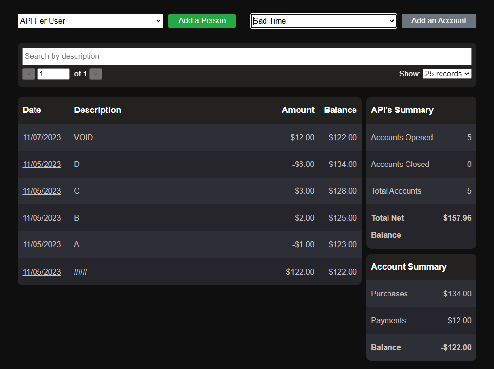
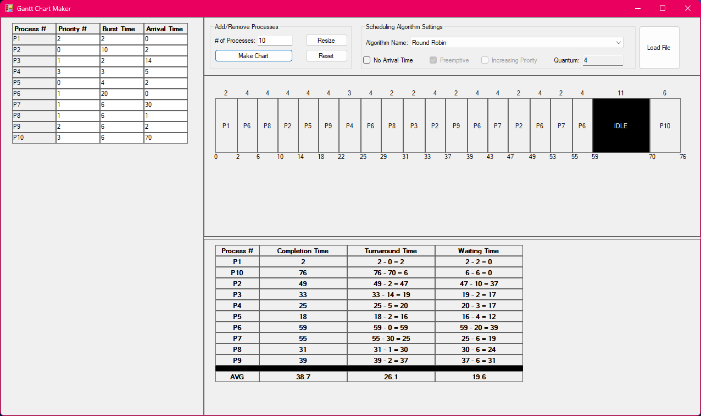

Welcome to My Portfolio 👋
Skills
- Programing Languages: C#, Python, Java, JavaScript, PHP
- Web Development: HTML, CSS, ASP.NET Core, React
- Databases: SQL, MongoDB
- Source Control & Scripting: Git, Bash
- Automation: Cypress, Selenium
Experience
| Paylocity |
Chicago, IL (Remote) |
| Software Engineer |
August 2024 — Present |
- Optimized the performance of a critical API endpoint, achieving a throughput
of 3,000 requests per second—a 7.5x improvement over the previous threshold.
This was accomplished through code profiling, schema analysis, and strategic
business logic enhancements, reducing SQL queries by 8x and significantly
improving system responsiveness and scalability.
- Migrated Selenium automation to Cypress, enhancing readability, reusability,
and stability. This transition reduced
flakiness and accelerated automation development time, improving overall
testing efficiency.
- Investigated and resolved pipeline build failures caused by unit test
timeouts, implementing a lazy loading strategy that
improved build times by 7x and reduced build failures by 43%, enhancing
CI/CD pipeline efficiency and reliability.
|
| Paylocity |
Chicago, IL (Remote) |
| Associate Software Engineer |
July 2022 — August 2024 |
- Diagnosed and resolved a complex, browser-specific bug that impacted the
company's culture support initiative,
affecting 18% of the user base and hindering critical application
functionality. This fix restored key features and
improved platform reliability for international users.
- Developed automation coverage for a key product suite used by ~22.5% of the
user base, improving test reliability and
addressing flakiness. This effort reduced team alert fatigue and increased
overall confidence in automation.
- Contributed to company initiative to improve mobile application experience
by integrating deep linking functionality
across the product suite. This involved collaborating with the mobile
development team to align on technical approach
and ensure a seamless implementation
|
| Paylocity |
Chicago, IL (Remote) |
| Software Engineer Intern |
May 2021 — August 2021 |
- Implemented a streamlined application tracking process using Google
Analytics, enabling more efficient data collection
and actionable user insights, providing actionable insights into user
activity and facilitating data-driven decision-making.
- Identified and resolved two crucial bugs, leading to a 15% improvement in
page load times, significantly enhancing site
performance and user experience.
|
Projects
| Personal Lending Tracker |
| Full-Stack Application | SQL, C#, RESTful API, React |
|
The Personal Lending Tracker started as a simple database-driven program to manage
loans, people, and transactions—essentially a more dynamic version of Excel.
Over time, this project has evolved into a full-stack application with various
technologies and concepts integrated along the way.
I regularly use this application, and I have a few more ideas on what to develop
down the line.
|
- Developed a financial education tool to help siblings learn about loans and
credit, evolving it from a database-driven
system to a full-stack application.
- Designed and implemented a SQL database with stored procedures and triggers
to manage loans, people, and
transactions, ensuring data consistency and integrity.
- Built a Windows Form application to improve usability, enabling intuitive
tracking and management of loans, payments,
and transaction history.
- Transitioned to an API-first approach, developing a RESTful API to expose
data and support future integrations,
following service layer and DAO design patterns.
- Created a React-based front end to provide a modern, interactive user
interface, implementing pagination, error
handling, and responsive design.
|
|

|
| Gantt Chart Maker |
| Windows Form Application | C# |
|
During my Operating Systems course, I studied CPU scheduling algorithms and created
Gantt charts as part of the coursework.
Motivated by a desire to automate the process and validate my work, I developed this
application to deepen my understanding of scheduling algorithms and enhance my
skills in dynamic UI development.
The application not only served as a tool to verify my results but also enabled me
to explore execution time summaries and performance comparisons across different
scheduling methods.
|
-
Developed a dynamic UI using standard Windows Form libraries to provide an
interactive interface for simulating CPU scheduling algorithms.
-
Implemented key features, including support for arrival times, preemptive
scheduling modes, and customizable quantum settings, enabling flexible
execution and analysis of scheduling strategies.
|
|

|
| Stock Checker |
| Portable Application | Python, Tkinter |
|
|